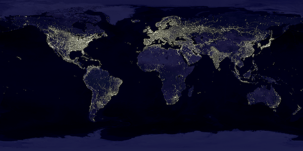

ResampleHQ
ResampleHQ provides gamma‐aware resizing and colorspace conversion.
- author: Cory Nelson (phrosty@gmail.com) (@scalablecory) (PhrostByte on Doom9)
- version: v8 for 32‐bit
- download: http://sourceforge.net/projects/int64/files/ResampleHQ/ResampleHQ-v7.zip/download
- discussion: http://forum.doom9.org/showthread.php?p=1484392
- license: GPLv3
Usage
ResampleHQ(clip
[, int width]
[, int height]
[, string dstcolorspace]
[, string srcmatrix]
[, string dstmatrix]
[, bool dither]
[, float src_left]
[, float src_top]
[, float src_width]
[, float src_height]
[, string kernel]
[, float karg1]
[, float karg2]
[, float kblur_x]
[, float kblur_y]
[, string chroma_kernel]
[, float chroma_karg1]
[, float chroma_karg2])
| Parameter | Description |
|---|---|
| width | The target width. If target colorspace is "YV12" or "YUY2", must be a multiple of 2. Default is source width. |
| height | The target height. If target colorspace is "YV12", must be a multiple of 2. Default is source height. |
| dstcolorspace | The colorspace to convert to. See the Colorspaces table for possible values. Default is source colorspace. |
| srcmatrix | The source matrix. See the Matrices table for possible values. Default is "TV.601". Ignored if source colorspace is RGB. |
| dstmatrix | The target matrix. See the Matrices table for possible values. Default is source matrix. Ignored if target colorspace is RGB. |
| dither | If true, the output is dithered. If false, the output is rounded. Dithering improves quality at the cost of speed and compressibility. It will not help with pre‐existing banding. Default is false. |
| src_left | A sub‐pixel offset to crop the source from the left. Default 0. |
| src_top | A sub‐pixel offset to crop the source from the top. Default 0. |
| src_width | A sub‐pixel width to crop the source to. If negative, specifies offset from the right. Default is source width − src_left. |
| src_height | A sub‐pixel height to crop the source to. If negative, specifies offset from the bottom. Default is source height − src_top. |
| kernel | The kernel to use while resizing. See the Kernels table for possible values. Default is "Spline36". |
| karg1 | The first argument to give to the kernel. See the Kernels table for possible values. |
| karg2 | The second argument to give to the kernel. See the Kernels table for possible values. |
| kblur_x | Alters the kernel support scale along the x axis. If positive, < 1.0 will sharpen the image while > 1.0 will blur the image. If negative, specifies the scale directly. Default is 1.0, or −min(width ∕ src_width, 1.0). |
| kblur_y | Alters the kernel support scale along the y axis. If positive, < 1.0 will sharpen the image while > 1.0 will blur the image. If negative, specifies the scale directly. Default is 1.0, or −min(height ∕ src_height, 1.0). |
| chroma_kernel | The kernel to use when processing sub‐sampled chroma. See the Kernels table for possible values. Default is "Bilinear". |
| chroma_karg1 | The first argument to give to the chroma kernel. See the Kernels table for possible values. |
| chroma_karg2 | The second argument to give to the chroma kernel. See the Kernels table for possible values. |
Notes
- ResampleHQ is compatible with all modes of SetMTMode.
- Dithering is not currently supported for YV12 and YUY2. This may come in the next version.
- Information about the different resizing kernels can be found at the Avisynth Wiki.
Kernels
The right choice of kernel depends highly on the source and your own personal preference—there is no "best" kernel. If you're not sure which one to use, start from Spline36 and use the graphs on the visual analysis page to tune your selection.
| kernel | karg1 | karg2 | Notes |
|---|---|---|---|
| Bicubic | The 'b' or 'B‐spline' curve. Larger values will cause blurring. Default is 1 ∕ 3. | The 'c' or 'Cardinal' curve. Larger values will cause ringing. Default is 1 ∕ 3. | |
| CatmullRom | Equivalent to Bicubic with 'b' = 0 and 'c' = 0.5. | ||
| MitchellNetravali | Equivalent to Bicubic with 'b' = 1 ∕ 3 and 'c' = 1 ∕ 3. | ||
| SoftCubic | The 'softness' value. Default is 100. | Equivalent to Bicubic with 'b' = softness ∕ 100 and 'c' = 1.0 − b. SoftCubic filter from madVR. | |
| Hermite | Equivalent to Bicubic with 'b' = 0 and 'c' = 0. | ||
| Robidoux | Equivalent to Bicubic with 'b' = 0.3782 and 'c' = 0.3109. | ||
| Bilinear | |||
| Blackman | The number of lobes to use. Larger values will increase sharpness and ringing. Default is 2. | ||
| Lanczos | |||
| Sinc | |||
| Spline16 | Spline filters from Avisynth. | ||
| Spline36 | |||
| Spline64 | |||
| Gaussian | The 'p' or 'sharpness' value. Default is 30. |
Colorspaces
| Colorspace | Notes | |
|---|---|---|
| RGB | Equivalent to RGB32. | |
| RGB24 | R′G′B′ packed into 24 bits. ResampleHQ can work with RGB24 without taking any peformance hit—in fact, it will be slightly faster than RGB32, even when the alpha channel is ignored. | |
| RGB32 | R′G′B′A packed into 32 bits. If both the source and destination colorspace are RGB32, the alpha channel is processed and presumed to be linear. Otherwise it is ignored and treated as fully opaque. | |
| YV12 | A planar Y′UV 4:2:0 format, with chroma (UV) sub‐sampled to half the size of luma (Y′). Both width and height must be mod‐2. This is the format usually used with H.264, MPEG‐4, and web video formats. |
It is very important to provide the correct matrix when using Y′UV colorspaces, as the results will otherwise come out slightly wrong. Despite the actual requirements of these Y′UV colorspaces, Avisynth requires the final output of your script be of mod‐4 width. Because of this, most filters also require these colorspaces to be of mod‐4 width. The ability to use mod‐2 widths is kept as an expert option in ResampleHQ. |
| YUY2 | A packed Y′UV 4:2:2 format, with chroma (UV) sub‐sampled to half the width of luma (Y′). Width must be mod‐2. | |
Matrices
Y′UV colorspaces have an associated matrix that defines RGB coefficients and Y′CbCr encoding ranges. It is very important to specify the correct matrix, or the video will be improperly processed and come out with slightly different brightness and colors.
| Matrix | Description | Red coefficient | Green coefficient | Blue coefficient | Luma range | Chroma range | Notes |
|---|---|---|---|---|---|---|---|
| TV.601 | ITU‐R BT.470-2 ITU‐R BT.601 SMPTE 170M |
0.299 | 0.587 | 0.114 | 16–235 (normal) | 16–240 (normal) | Most sources will be this. YouTube expects this for all videos, even HD. |
| PC.601 | 0–255 (full) | 0–255 (full) | |||||
| TV.709 | ITU‐R BT.709 | 0.2125 | 0.7154 | 0.0721 | 16–235 (normal) | 16–240 (normal) | Usually used only for HDTV sources. |
| PC.709 | 0–255 (full) | 0–255 (full) | |||||
| TV.240 | SMPTE 240M | 0.212 | 0.701 | 0.087 | 16–235 (normal) | 16–240 (normal) | Mainly used by old HDTVs. |
| PC.240 | 0–255 (full) | 0–255 (full) | |||||
| TV.FCC | FCC | 0.3 | 0.59 | 0.11 | 16–235 (normal) | 16–240 (normal) | |
| PC.FCC | 0–255 (full) | 0–255 (full) |
Description
Our eyes don't perceive light linearly. Twice the photons will not appear twice as bright. To account for this, colorspaces with small bit widths (all the ones in Avisynth) are gamma‐compressed to give a more eye‐friendly representation, ensuring bits are evenly distributed across all perceived intensities.
These gamma‐compressed colors must be converted back to a linear colorspace prior to blending, or you get incorrect results. None of Avisynth's filters do this correctly. For rare scenes with a lot of sharp contrast this causes very pronounced errors. For most other scenes the errors are more subtle. It can also effect the quality of anti-aliasing on edges with a lot of contrast (such as in outline‐heavy anime and cartoons).
As an example, lets find out the brightness we'd get when blending two gamma‐compressed values: 0.1 and 0.9. If we add these two values as they are, we'd get 1.0: 100% white. But this is incorrect. To find out the real value, we must first uncompress the values to find their linear brightness. Doing so, we get 0.01 and 0.79. When we add these together and re‐compress the result, we get 0.905: that's about 10% darker (perceptually) than what we got using the incorrect method!
ResampleHQ produces correct results using a high‐precision 100% linear pipeline. Because colorspace conversion and resizing are often essentially the same thing, we can perform both operations at once for higher performance and better quality.
Examples
Here is "Earth's City Lights", courtesy of NASA and Visible Earth. Note how the ResampleHQ image is much brighter overall, and shows faint light in completely new places around Canada, Alaska, western United States, and along coastlines.
This image was cherry‐picked to show the detrimental effects gamma‐ignorant resizers have on images with high contrast. It also has an extremely high‐res source (4800×2400), which compounds the issue futher as more pixels are blended to get the final result.

{kind=link}
ResampleHQ
convert -colorspace sRGB earthlights_big.jpg -resize 600x300 earthlights_small2.png
{kind=link}
Implementation
True sRGB gamma conversion is used, not the gamma 2.2 approximation. Sub-sampled Y′UV formats are internally converted out of necessity to linear sRGB.
Dithering uses a modified version of the Floyd–Steinberg error diffusion algorithm. Modifications include serpentine scanning as well as an altered diffusion pattern to better suit serpentine.
All operations are performed in 32‐bit floating‐point. This is definitely overkill, but makes things easier to prototype. It may be more performant to use 16‐bit integers when possible.
TODO
- Dithered Y′UV output?
- Use OpenCL.
- AVX horizontal resampler.
- 1-pass loop blocked resampler.
- Optimize memory usage.
- Don't resize if not needed.
- Avisynth 2.6 formats (Y8/YV411/YV16/YV24).
Thanks
- Dark Shikari for explaining the basics of sinc resampling.
- Nicolas Robidoux for explaining finer details of resampling.
- madshi for sharing SoftCubic details and other useful information.
- Dogway for thorough initial testing and uncovering bugs.
- ChaosKing for testing and benchmarking AVX implementation.
License
Copyright © 2011 Cory Nelson
This program is free software: you can redistribute it and/or modify it under the terms of version 3 of the GNU General Public License as published by the Free Software Foundation.
This program is distributed in the hope that it will be useful, but WITHOUT ANY WARRANTY; without even the implied warranty of MERCHANTABILITY or FITNESS FOR A PARTICULAR PURPOSE. See the GNU General Public License for more details.
You should have received a copy of the GNU General Public License along with this program. If not, see <http://www.gnu.org/licenses/>.
Changelog
Version 8
- RGB8-specialized gamma corrections—15% faster color conversions.
- New gamma correction approximations—200% faster color conversions.
- SSE horizontal resampler—25% faster.
- Cache optimizations to vertical resampler—10% faster.
- Experimental FMA4 color conversions for AMD Bulldozer.
- Reduced memory usage.
- Remove automatic multithreading in favor of SetMtMode.
- Bug fix: handle very tiny row widths.
Version 7
- Multi‐core optimizations.
- SSE/AVX vertical resampler.
- AVX implementations of all conversions.
- Optimizations to SSE RGB conversions.
- Significant memory use reduction and minor optimizations to dithered RGB output.
- Better compatibility with Avisynth built‐in resizers.
- Add kernel visualization docs.
- Remove 64‐bit version temporarily.
Version 6
- SSE Y'CbCr output conversions. All conversions now have SSE implementations.
- Bug fix: correct rounding in SSE output conversions.
- Bug fix: allocate dithering error buffers.
- Bug fix: Hermite and Robidoux kernels are now enabled.
- Bug fix: correct spelling of Spline36 and Mitchell–Netravali.
Version 5
- Catmull–Rom, Gaussian, Hermite, Mitchell–Netraveli, Robidoux, Sinc, and SoftCubic kernels.
- SMPTE 240M and FCC matrices.
- Customization of kernel support scale.
- Customization of chroma kernel.
- Support for SetMTMode(1).
- More SSE versions of colorspace conversions.
- Bug fix: make SSE paths work with unaligned sources.
- Bug fix: scale chroma correctly.
Version 4
- Bug fix: clamp out of range values caused by resizing.
- Bug fix: don't process padding in RGB output.
Version 3
- Sub‐pixel cropping.
- Bilinear, Bicubic, Spline16, Spline64, Lanczos, and Blackman kernels.
- SSE2/SSSE3 RGB -> linear conversion.
- Minor optimizations.
Version 2
- Bug fix: correct chroma conversion.
- Bug fix: preserve RGB32 alpha channel.
- Dithered output for RGB.
Version 1
- Initial release!